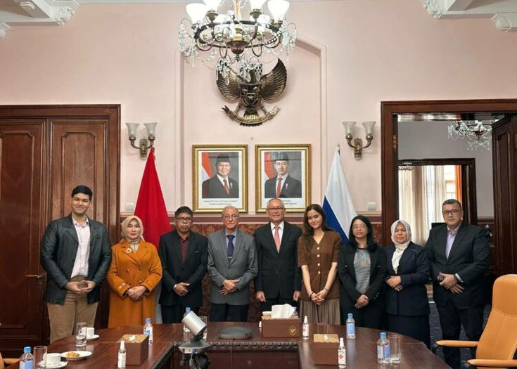
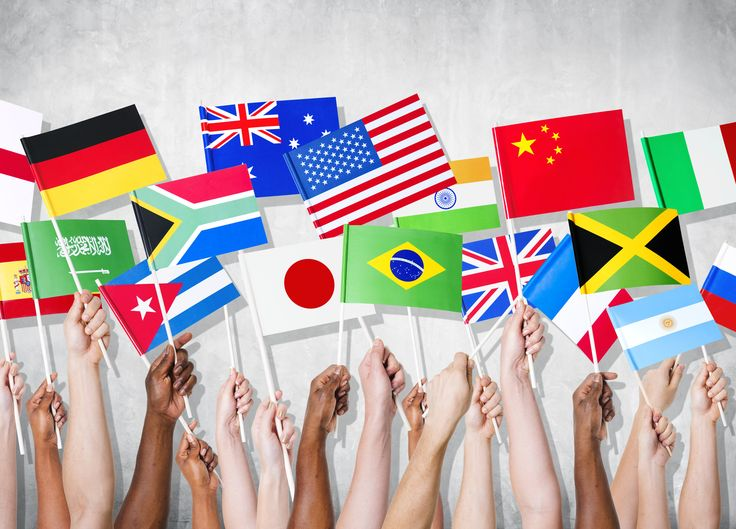
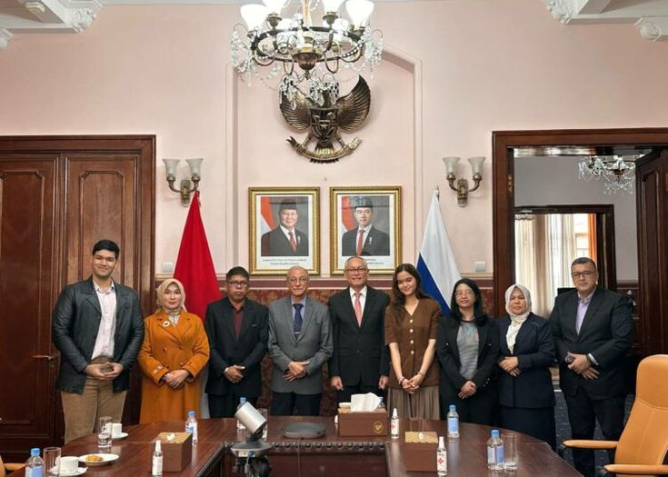
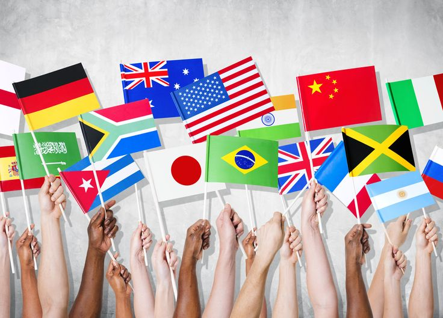

_waifu2x_noise1_scale4x.png)
Selamat datang di website ini, tempat saya membagikan penjelasan yang jelas dan mudah dipahami mengenai peran Indonesia dalam mendukung Sustainable Development Goals (SDGs) melalui berbagai bentuk kerja sama internasional. Mulai dari upaya mengakhiri kemiskinan, meningkatkan kualitas pendidikan, hingga melindungi lingkungan, SDGs terdiri atas 17 target global yang disepakati negara-negara di dunia, termasuk Indonesia, untuk dicapai pada tahun 2030. Di sini, kamu dapat menemukan penjelasan tentang apa itu SDGs, mengapa SDGs penting, tantangan yang saat ini dihadapi Indonesia (seperti learning poverty, ketimpangan akses pendidikan, serta dampak pandemi COVID-19), dan bagaimana berbagai sektor berkontribusi dalam menciptakan pembangunan yang berkelanjutan.
Kamu juga akan melihat bagaimana Indonesia menjalin kerja sama dengan negara lain melalui hubungan bilateral, regional, dan multilateral. Baik melalui kolaborasi dengan Jepang di bidang teknologi, keterlibatan dalam program-program ASEAN, maupun partisipasi aktif dalam lembaga global seperti PBB dan WHO, Indonesia terus mengambil bagian dalam upaya bersama untuk menghadapi isu-isu dunia. Website ini menyajikan wawasan, contoh nyata, serta tindakan praktis yang dapat dilakukan oleh pemerintah, masyarakat, maupun individu untuk mewujudkan tujuan SDGs. Semoga informasi yang ada dapat membantu kamu memahami tidak hanya tujuan-tujuannya, tetapi juga bagaimana kerja sama internasional membentuk masa depan yang lebih baik bagi semua.
 



Sustainable Development Goals (SDGs), atau Tujuan Pembangunan Berkelanjutan, adalah serangkaian tujuan global yang dicanangkan oleh PBB pada tahun 2015 untuk mengakhiri kemiskinan, melindungi lingkungan, dan memastikan kemakmuran bagi semua.
Berikut ini merupakan tujuan-tujuan SDGs:
Memastikan semua orang, termasuk mereka yang hidup dalam kemiskinan, memiliki hak dan akses terhadap sumber daya ekonomi, pelayanan dasar, serta terlindungi dari dampak bencana seperti ekonomi, sosial, dan lingkungan.
Mengakhiri kelaparan dan segala bentuk kekurangan gizi, serta mencapai ketahanan pangan berkelanjutan bagi semua orang. Ini termasuk mempromosikan pertanian berkelanjutan serta meningkatkan pendapatan petani kecil.
Memastikan kehidupan yang sehat dan mendukung kesejahteraan bagi semua orang di segala usia. Tujuan ini mencakup pengurangan angka kematian ibu dan anak, pemberantasan penyakit menular, dan penguatan sistem kesehatan.
Memastikan pendidikan yang inklusif dan berkualitas setara bagi semua, serta mempromosikan kesempatan belajar seumur hidup. Pendidikan adalah pondasi untuk meningkatkan kehidupan dan pembangunan berkelanjutan.
Mencapai kesetaraan gender dan memberdayakan semua perempuan dan anak perempuan. Tujuan ini berfokus pada mengakhiri diskriminasi, kekerasan, dan praktik berbahaya terhadap perempuan, serta memastikan partisipasi penuh dan setara dalam kepemimpinan.
Menjamin ketersediaan dan pengelolaan air bersih serta sanitasi yang berkelanjutan untuk semua. Akses ke air bersih dan sanitasi adalah hak asasi manusia yang mendasar.
Memastikan akses terhadap energi yang terjangkau, andal, berkelanjutan, dan modern untuk semua. Transisi ke energi terbarukan sangat penting untuk melawan perubahan iklim.
Mempromosikan pertumbuhan ekonomi yang berkelanjutan dan inklusif, kesempatan kerja penuh dan produktif, serta pekerjaan yang layak bagi semua. Pertumbuhan ekonomi harus memberikan manfaat bagi seluruh masyarakat.
Membangun infrastruktur yang tangguh, mempromosikan industrialisasi yang inklusif dan berkelanjutan, serta mendorong inovasi. Infrastruktur yang baik adalah tulang punggung pembangunan ekonomi.
Mengurangi kesenjangan di dalam dan antar negara. Kesenjangan pendapatan dan akses adalah tantangan global yang membutuhkan kebijakan yang inklusif.
Membuat kota dan pemukiman manusia inklusif, aman, tangguh, dan berkelanjutan. Dengan lebih dari separuh populasi dunia tinggal di kota, perkotaan yang terkelola dengan baik sangat penting.
Memastikan pola konsumsi dan produksi yang berkelanjutan. Ini tentang melakukan lebih banyak dan lebih baik dengan sumber daya yang lebih sedikit dan mengurangi limbah.
Mengambil tindakan segera untuk memerangi perubahan iklim dan dampaknya. Perubahan iklim adalah ancaman global yang membutuhkan respons kolektif yang cepat dan ambisius.
Melestarikan dan memanfaatkan secara berkelanjutan sumber daya samudera, laut, dan maritim untuk pembangunan berkelanjutan. Lautan adalah kunci untuk ketahanan pangan dan regulasi iklim global.
Melindungi, memulihkan, dan mempromosikan pemanfaatan berkelanjutan ekosistem daratan, mengelola hutan secara berkelanjutan, memerangi desertifikasi (penggurunan), dan menghentikan serta memulihkan degradasi lahan dan keanekaragaman hayati.
Mempromosikan masyarakat yang damai dan inklusif untuk pembangunan berkelanjutan, menyediakan akses keadilan untuk semua, dan membangun institusi yang efektif, akuntabel, dan inklusif di semua tingkat. Perdamaian dan keadilan adalah prasyarat untuk pembangunan berkelanjutan.
Memperkuat sarana pelaksanaan dan merevitalisasi kemitraan global untuk pembangunan berkelanjutan. Tujuan ini adalah tentang bagaimana kita bekerja sama melalui pendanaan, teknologi, kerjasama internasional, dan kebijakan untuk mencapai semua tujuan lainnya.
Analisis Mendalam tentang Tantangan dan Solusi Pendidikan di Indonesia
Dari setiap 100 anak usia SMA, hanya 60 yang benar-benar bersekolah dan ingin belajar, 40 lainnya keluar dari sekolah ataupun tidak pernah dapat bersekolah. Hal ini menunjukkan adanya kesenjangan akses dan partisipasi pendidikan, terutama di daerah terpencil dan keluarga berpenghasilan rendah.
Pandemi COVID-19 menyebabkan learning loss atau kehilangan pembelajaran yang setara dengan sekitar 1 tahun pembelajaran penuh. Dampak terparah dirasakan oleh siswa dari keluarga miskin karena keterbatasan akses terhadap teknologi dan internet selama pembelajaran daring.
Berdasarkan laporan dari World Bank (2024) menyatakan bahwa 55% anak berusia <10 tahun di Indonesia mengalami learning poverty yaitu ketidakmampuan untuk membaca serta memahami teks sederhana. Hal ini menjadi pondasi yang rapuh bagi pendidikan selanjutnya.
Tidak semua daerah mempunyai anggaran pendidikan yang setara. Akibatnya, fasilitas sekolah dan kesejahteraan guru berbeda-beda. Selain itu, biaya lain seperti transportasi, seragam, buku-buku, serta les juga sering jadi penghalang bagi keluarga yang kurang mampu.
Di beberapa daerah, masih sering terjadinya pernikahan dini dimana ada anggapan bahwa anak harus cepat bekerja agar dapat membantu keluarga. Hal tersebut mengakibatkan banyak anak putus sekolah lebih cepat.
Seringnya perubahan kurikulum membuat guru dan sekolah bingung menyesuaikan diri. Selain itu, kualitas guru belum merata karena sistem rekrutmen dan penempatan guru belum berjalan baik di semua daerah.
mempunyai peran penting untuk menyebarkan informasi dan praktik baik terkait pendidikan, serta menjalankan fungsi pengawasan sosial terhadap kebijakan pendidikan.
perlu menjadi mitra aktif sekolah; mendukung literasi di rumah, memastikan anak tetap bersekolah, dan menciptakan lingkungan belajar di rumah.
Membuat program sosial seperti beasiswa, pembangunan perpustakaan, ataupun pelatihan guru agar pendidikan semakin merata dan berkualitas.
Bentuk-bentuk kolaborasi yang dilakukan Indonesia dengan negara lain dalam mendukung pencapaian SDGs
Bilateral

Regional

Multilateral
Kerja sama bilateral adalah bentuk kerja sama antara dua negara untuk mencapai tujuan bersama dalam bidang ekonomi, politik, pendidikan, teknologi, atau sektor lainnya.
Kerja sama bilateral memungkinkan Indonesia untuk mendapatkan akses langsung ke teknologi dan investasi dari negara mitra, sekaligus memperkuat posisi diplomatik di kancah internasional.
Kerja sama regional adalah kerja sama antara negara-negara dalam satu kawasan tertentu, seperti Asia Tenggara atau Eropa, yang memiliki kesamaan geografis, budaya, kepentingan ekonomi, atau sejarah.
Melalui ASEAN, Indonesia aktif dalam berbagai program regional yang mendukung pembangunan berkelanjutan dan stabilitas kawasan Asia Tenggara.
Kerja sama multilateral adalah kerja sama yang melibatkan banyak negara melalui organisasi internasional seperti PBB, WTO, WHO, atau IMF untuk mengatasi masalah global yang membutuhkan kolaborasi bersama.
Indonesia aktif dalam berbagai forum multilateral seperti PBB untuk menyuarakan kepentingan negara berkembang dan berkontribusi dalam penyelesaian masalah global.
SDGs adalah rencana aksi global dengan 17 tujuan terintegrasi untuk mengakhiri kemiskinan, mengurangi kesenjangan, dan melindungi lingkungan pada 2030. Mencapai tujuan-tujuan ini, seperti Pendidikan Berkualitas (SDG 4), membutuhkan komitmen dan strategi yang mengatasi tantangan seperti kesenjangan ekonomi, akses, dan kualitas pengajaran.
Kerjasama dalam berbagai bentuk, mulai dari bilateral, regional, hingga multilateral, merupakan kunci untuk memobilisasi sumber daya, teknologi, dan pengetahuan. Kolaborasi ini memungkinkan negara-negara saling mendukung dalam membangun infrastruktur, memperbaiki tata kelola, dan menciptakan inovasi.
Dengan memanfaatkan potensi seperti teknologi dan populasi muda, serta peran aktif masyarakat, tujuan SDGs dapat diwujudkan. Setiap aksi nyata, baik dari pemerintah, sekolah, maupun individu, berkontribusi pada pembangunan yang inklusif dan berkelanjutan. Pada akhirnya, masa depan bumi dan kesejahteraan generasi mendatang bergantung pada komitmen kolektif kita hari ini.

Halo semuanya! Nama saya Queenvi. Saya membuat website ini dengan tujuan sebagai wujud kepedulian dan kontribusi nyata untuk menyebarluaskan pemahaman tentang Tujuan Pembangunan Berkelanjutan (SDGs). Melalui web ini, saya berharap dapat mengedukasi masyarakat tentang pentingnya SDGs dan menginspirasi lebih banyak orang untuk terlibat dalam aksi nyata, baik secara individu maupun melalui kerjasama, demi mewujudkan masa depan yang lebih baik bagi semua!
https://sdgs.un.org/goals
Senin, 18 November 2024 - 17:30 WIB
https://sdgs.bappenas.go.id
Selasa, 19 November 2024 - 18:45 WIB
https://www.worldbank.org/sdgs
21 November 2024 - 19:15 WIB
https://www.undp.org/sdg-partnerships
26 November 2024 - 20:30 WIB
https://en.unesco.org/sdgs-education
18 November 2024 - 16:00 WIB
https://www.sdgsactioncampaign.org
22 November 2024 - 16:39 WIB
https://dashboards.sdgindex.org
17 November 2024 - 08:48 WIB
https://www.unep.org/sustainable-development-goals
22 November 2024 - 8:55 WIB